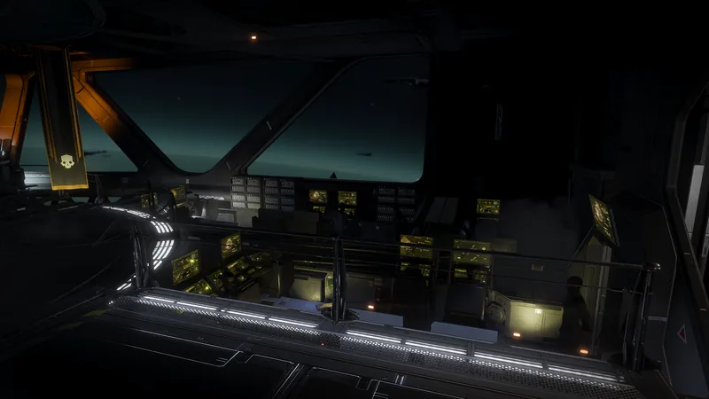

Enhanced 燃烧

“在燃料中加入精确配制的铝热剂、白磷、辣椒素、异硫氰酸烯丙酯和19种其他助燃剂，提高燃烧型武器的燃烧温度。
— 舰船管理终端
Enhanced 燃烧 is a Tier 4 舰船模块 升级 for the Bridge.
升级效果
- This will affect both the 正面 on-hit 伤害 and the 伤害-over-time status 效果.
要求
- Power Steering
 200 Common Sample
200 Common Sample 150 Rare Sample
150 Rare Sample 15 Super Sample
15 Super Sample 25,000 申购点 Slips
25,000 申购点 Slips
受影响的战略配备
变更历史
补丁
描述
1.000.202
2024-04-11
(Mid-补丁)
Added to the game.